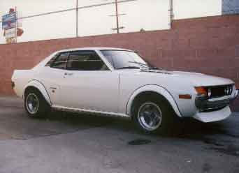
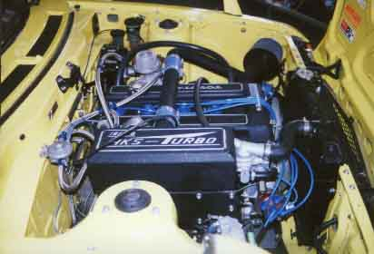

Engine Code (cc) (C/R) HP NOTES:
18RG 1968 9.7:1 145 210 Cyl. Head
18RGR 1968 9.2:1 135 Air Injection
18RGRU 1968 9.2:1 130 EGR
18RGU 1968 8.7:1 125 Yamaha Head
18RGEU 1968 8.3:1 125 Fuel Injection
Repair Manual TOYOTA
Repair Manual Haynes/European Edition
TURBO KIT:
Manifold, wastegate, T04 turbo, carburetor, bonnets,
fuel pump, fuel regulator, by-pass valve, misc. hardware
GASKETS:
Engine overhaul set
Top end overhaul set
Cam cover gasket
Spark tower gasket, pr.
Semi-circular plug, pr.
Intake manifold gasket
Exhaust manifold gasket
Exhaust flange gasket
Cylinder head gasket, Std. 88.5mm
Cylinder head gasket, OS 92.5mm
Cylinder head front cover gasket, 2 bolt or 4 bolt
Thermostat gasket
Thermostat Body to Head
Timing cover gasket
Distributor O-ring
Block side vent gasket
Oil pump gasket
Oil filter gasket
Oil pan gasket
Oil drain plug gasket
IGNITION PARTS:
Distributor electronic
Distributor cap, early pts., Type 18RG
Distributor cap, Elec. type, late pts. type
Distributor rotor, early pts. type
Distributor rotor, Elec. type, late pts. type
Sparkplug, NGK BPR5EY
Sparkplug, NGK BPR6EY, High performance
sparkplug, NGK BPR5EVX, Platinum high perf.
Sparkplug, NGK BPR6EVX, Platinum high perf.
Ignition wire, OEM TOYOTA
Ignition wire, NGK
Jacobs Energy Pak
Jacobs Omni Pak
Jacobs Ultra Pak
Jacobs computer team, Ignition system
ENGINE PARTS:
CAMSHAFT: DURATION LIFT
272 10.5mm
288 10.5mm
304 10.5mm
320 11.0mm
Stock, used
Custom grind available, special order made from brand new Billets
Cam Sprocket, 3 bolt, early type
Cam Sprocket, 1 bolt
Cam Sprocket, adjustable
VALVES:
Intake: Standard 45.0mm 210 Head
46.0mm S.S.
Oversize 47.0mm
Exhaust: Standard 37.5mm
Oversize 40.5mm
38.5mm S.S.
Valve seat, Standard
Valve seat, OS
Valve adjusting shim, sizes 1.2mm - 3.5mm
Valve adjusting shim, sized 3.6mm - 5.0mm
Valve guide
Valve stem oil seal, OEM
Valve stem oil seal, aftermarket
Valve lock, pair
Valve lifter
Valve spring, inner
Valve spring, outer
Valve spring retainer
Valve spring seat
TIMING CHAIN / TENSIONER:
Upper chain, OEM type
Upper chain, Replacement type
#2 Tensioner
#1 Tensioner
#3 Damper
#2 Damper
#1 Damper
Slipper "C"
PISTON / RINGS:
Compression Bore
10.5:1 92.0mm Forged, set w/ rings
10.5:1 92.5mm Forged, set w/ rings
9.7:1 92.0mm Forged, set w/ rings
9.7:1 88.5mm Cast, set w/ rings
8.5:1 88.5mm Cast, set w/ rings
10.5:1 92.0mm Rings
10.5:1 92.5mm Rings
9.7:1 92.0mm Rings
9.7:1 88.5mm Rings
8.5:1 88.5mm Rings
ENGINE BEARINGS:
Main Crank, Std., .25mm w/ t.washer
Main Crank, Std., .25mm w/out t.washer
Con-Rod, Std., .25mm
Thrust washer, Std. or OS
OIL PUMP / COOLER / FILTER:
High volume / Race type
Standard OEM type
Remote oil filter kit
Remote oil filter kit w/ S.S. hoses, Race type
Oil cooler kit
Oil cooler kit, Race type
Water Pump, w/o clutch
Water Pump, w/ clutch
Thermostat 160 degrees
180 degrees
190 degrees
CARBURETOR / AIR FILTER:
Intake Manifold
Weber 40, pair
Weber 45, pair
Mikuni Rebuild Kit Solex, early type
Mikuni gasket kit, 40PHH
Mikuni gasket kit, 44PHH
Insulator Bakelite Gasket
Fuel pump 4-5psi, Race type
Fuel pump, Block-off plate
Air filter, K&N, 2.25" pr.
Air filter, K&N, 4.0" pr.
Air filter, ITG
Vent filter / Breather, cylinder head, K&N
K&N air filter recharge kit
EXHAUST:
Exhaust Manifold, 1 outlet
Exhaust Manifold, 2 outlet
Header, Race type
DRIVETRAIN:
Centerforce I
Centerforce II
Dual Friction
Toysport Race clutch kit
Toysport Street clutch kit
Throw-out bearing
Pilot Bearing
Flywheel bolts
Clutch cover bolts
For any inquiries, please call 213-755-1177 or email us.